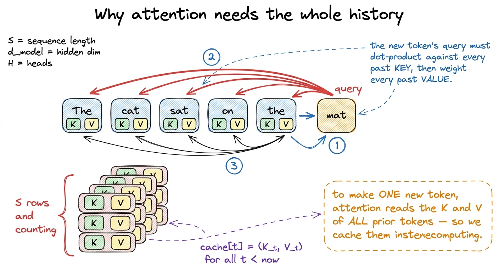
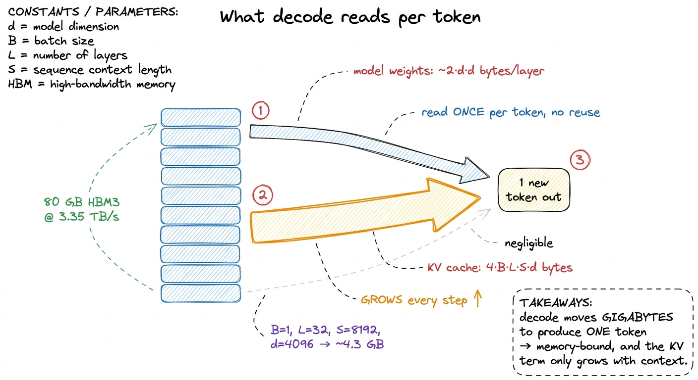
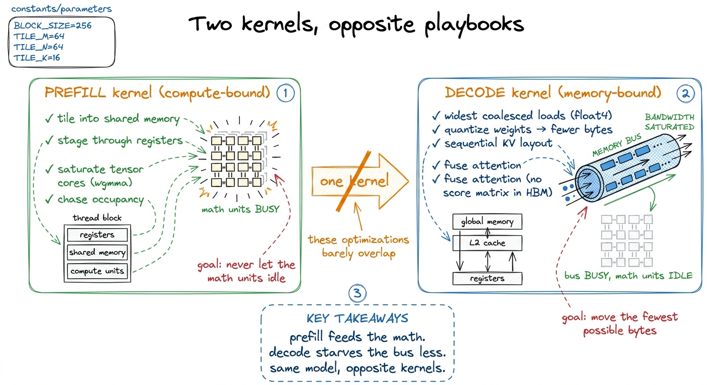
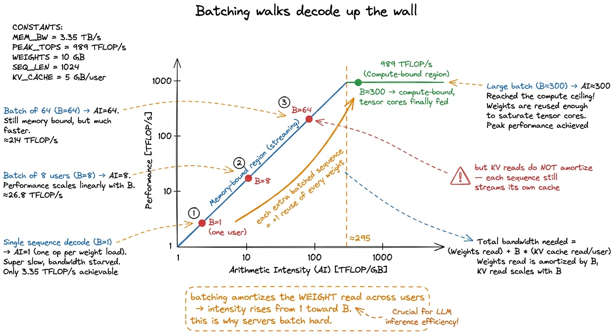
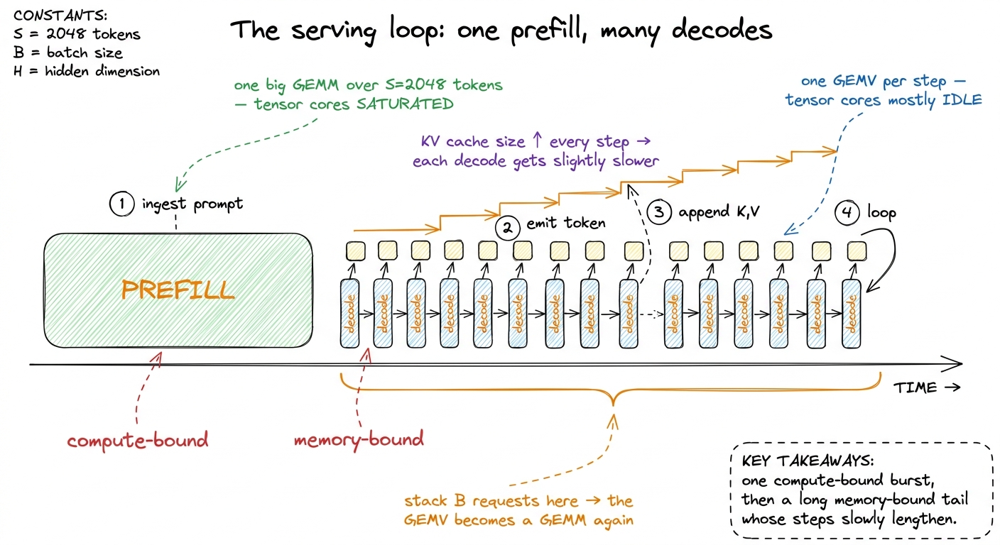

Prefill vs decode: two different machines
When I first profiled a real serving loop end-to-end, one thing stopped me cold. A single model, one set of weights, was running two workloads that look almost identical on paper — and they behaved like two completely different machines on the die. One of them pulled most of the H100's tensor-core throughput. The other left that same silicon almost entirely idle, watching the memory bus. Same weights. Same attention. Same MLP. So why did one kernel fly and the other crawl?
That question is what this article is about. By the end you'll be able to look at any transformer inference step, do a little napkin arithmetic in your head, and say with confidence: "this one is compute-bound, feed the tensor cores" or "this one is memory-bound, move fewer bytes." That single judgment call is the whole discipline of inference kernel engineering compressed into one decision.
Let me build it from the ground up. You don't need to have read anything else on this site to follow along, though I'll link the deeper dives as we go.
Starting from zero: what a transformer actually does at inference time
Forget kernels for a second. Here is the only thing you need to know about how a language model generates text.
You give it a prompt — say, "The capital of France is". The model reads all of those tokens, thinks, and produces one new token: "Paris". Then it reads "The capital of France is Paris" and produces the next token. Then again, and again, one token at a time, until it decides to stop. That's it. Autoregressive generation is just a loop that appends one token per turn.
Now here's the thing that isn't obvious. Those two activities — reading the prompt and generating each new token — are not the same kind of work, even though they run the exact same math. The industry gives them two names:
- Prefill: the model ingests the entire prompt at once and computes the first new token.
- Decode: the model emits every token after that, one at a time, each step feeding in only the single token it just produced.
 figure rendering · Prefill processes the whole prompt in one pass; decode then emits toke
figure rendering · Prefill processes the whole prompt in one pass; decode then emits tokeThe natural question — the one I want you holding in your head for the rest of this article — is this: if it's the same weights and the same math, why would we ever need two different kernels? Write one kernel for both, and how badly could it go?
It turns out: very badly. Let me show you why, and the reason will be the whole thesis of this site playing out inside a single serving loop.
The central mental model: reuse is everything
Before we touch any real numbers, I want to plant one idea in your head and then reuse it relentlessly. Here it is.
Every time a kernel does work, it pays two separate bills. One bill is compute: the actual multiply-and-add floating-point operations. The other bill is memory: dragging the numbers it needs out of the GPU's main memory (HBM) and onto the chip. These two bills are paid by two different pieces of hardware — the math units and the memory bus — and they run in parallel. Whichever bill takes longer is the one you actually wait on. The other one finishes early and twiddles its thumbs.
So the question "is this kernel fast?" is really the question "which bill is bigger?" And the thing that decides which bill is bigger is a single ratio: how many math operations do we get to do for each byte we drag out of memory? That ratio has a name — arithmetic intensity — and it's measured in FLOPs per byte.
 figure rendering · The mental model for the whole article: a kernel pays a memory bill an
figure rendering · The mental model for the whole article: a kernel pays a memory bill anHold onto that balance scale. We're going to weigh prefill and decode on it, and watch the needle swing all the way to one side, then all the way to the other. This is the same framework the three regimes article builds out in full and the same idea behind the roofline model — I'm just going to make it concrete for inference.
The magic word is reuse. If I can drag one number out of memory and then use it in a hundred different multiplications, my arithmetic intensity is high, the compute bill dominates, and I'm compute-bound. If I drag a number out and use it exactly once before throwing it away, my intensity is near 1, the memory bill dominates, and I'm memory-bound. Everything that follows is just this idea, applied twice.
Same math, two shapes
Let's make it real with the smallest concrete example I can. Take one linear layer of the transformer — a weight matrix W of shape [d, d]. Pick d = 4096, a reasonable size for a mid-size model. This one matrix has 4096 × 4096 ≈ 16.8 million weights. In FP16, at two bytes each, that's about 33 MB of weights for this one layer.1 A real transformer layer has several of these matrices — the four attention projections (Q, K, V, O) and two or three in the MLP block — plus the model has dozens of layers. One layer's worth of matrices is the atom; the full model is that atom stacked ~30–100 times. The reasoning here scales cleanly, so I'll follow a single [d, d] matrix and let you multiply up.
Now watch what the same layer does in the two phases.
In prefill, we push the entire prompt through it at once. If the prompt has S tokens (say S = 2048), the activation coming into this layer is a matrix X of shape [S, d] — one row per token. The layer computes X · W, a [2048, 4096] × [4096, 4096] matrix-matrix multiply. That's a General Matrix Multiply (GEMM), the exact workload the entire GEMM optimization ladder on this site exists to make fast.
In decode, the prompt is already processed. We're generating token 2049, then 2050, then 2051 — and on each step we feed the model exactly one new token. The activation is now a single row, x of shape [1, d]. The layer computes x · W, a [1, 4096] × [4096, 4096] matrix-vector multiply (GEMV). Same W. Same weights, byte for byte. The only thing that changed is that the batch dimension of the activation collapsed from 2048 down to 1.
 figure rendering · The same weight matrix, driven by a matrix in prefill and by a single
figure rendering · The same weight matrix, driven by a matrix in prefill and by a single That collapse from 2048 to 1 is the entire story. Because — remember the balance scale — arithmetic intensity lives or dies on reuse, and reuse is exactly what that batch dimension buys you.
Weighing it: the arithmetic-intensity cliff
Now let's put both phases on the scale and turn the crank. I'll do the arithmetic slowly so you can follow every step by hand. We work in FP16, two bytes per number.
A matrix multiply of [m, d] × [d, d] does 2 · m · d · d floating-point operations. (The 2 is because each output element is a sum of d multiplies and d adds; the m · d · d is the number of output elements times the length of each dot product. Don't take my word for it — it's just counting.) And it must read the weight matrix out of HBM: d · d numbers, which is 2 · d · d bytes.
Prefill first. Here m = S = 2048.
- Compute:
2 · S · d · dFLOPs. - Weight bytes read:
2 · d · d. - Arithmetic intensity:
(2 · S · d · d) / (2 · d · d) = S = 2048FLOPs per byte.
Read that result again, because it's the good news. Every weight we drag out of memory gets multiplied against 2048 different token rows before we throw it away. That's a mountain of reuse. The activations are small compared to the weights, so I'm ignoring them for the estimate.2 I'm being deliberately loose here — the activation reads and writes do add bytes, and a real GEMM stages tiles through shared memory. But the weight term dominates the HBM traffic, and the point is the order of magnitude of the ratio, which the weight-only estimate nails. The arithmetic intensity article does the fully accurate accounting.
Is 2048 FLOPs/byte a lot? Compare it to the H100's ridge point — the intensity at which the two bills exactly balance. That's peak compute over peak bandwidth: about 989 TFLOP/s of BF16 tensor-core throughput divided by 3.35 TB/s of HBM bandwidth, which comes out to roughly 295 FLOPs per byte.3 The ridge point moves with the hardware. On an A100 it's about 13 FLOPs/byte for plain FP32 (19.5 TFLOP/s ÷ 1.5 TB/s) but around 200 for its FP16 tensor cores; on an H100 SXM5 it's ~295 for BF16; on a B200 the tensor throughput jumps again and the ridge point climbs with it. Higher ridge point means it's harder to stay compute-bound — compute has been growing faster than bandwidth for years, and that gap is why kernel engineering exists. See A100 → H100 → B200. Prefill's 2048 sits comfortably to the right of that line. It's compute-bound. The tensor cores are the bottleneck, exactly as we want.
Now decode. Here m = 1.
- Compute:
2 · 1 · d · dFLOPs. - Weight bytes read:
2 · d · d— the same bytes as prefill, because it's the same matrix. - Arithmetic intensity:
(2 · 1 · d · d) / (2 · d · d) = 1FLOP per byte.
One. One FLOP per byte. We read the entire 33 MB weight matrix out of HBM to touch each weight exactly once. We are sitting roughly 300× below the ridge point. The 989 TFLOP/s of tensor cores have essentially nothing to do — they finish their tiny compute bill instantly and then idle while the memory system heaves the weights across the bus. Decode is violently memory-bound.
 figure rendering · Two dots on one roofline, three orders of magnitude apart. No single k
figure rendering · Two dots on one roofline, three orders of magnitude apart. No single kTwo dots, same roofline, same model, three orders of magnitude apart on the intensity axis. This is the picture I wish someone had drawn for me the first time. There is no single kernel that is optimal at both points, because the two points call for opposite hardware. That's the honest, physical reason real inference stacks — vLLM, TensorRT-LLM, SGLang — ship a distinct prefill path and decode path and never confuse them.
Let me make the decode number visceral, because "1 FLOP per byte" is abstract. A decode step's latency, to first order, is just total model bytes ÷ HBM bandwidth. Take a 13-billion-parameter model in FP16: that's about 26 GB of weights. At 3.35 TB/s, streaming all of it takes 26 GB / 3.35 TB/s ≈ 7.8 milliseconds.4 That 7.8 ms is a hard floor from weight reads alone, and it's per token. It's why the token-generation rate of a served model is governed by memory bandwidth, not by how many teraflops the chip advertises. Two GPUs with identical FLOPs but different HBM bandwidth will generate tokens at rates proportional to their bandwidth, not their compute. This is the single most counterintuitive fact about LLM serving. So the model can't emit tokens faster than about 128 per second no matter how fast its tensor cores are — because on every single token it has to drag all 26 GB across the bus, and the tensor cores' 989 TFLOP/s of headroom simply never gets used.
Decode's second, bigger bill: the KV cache
So far I've made decode look bad purely on weight reads. But there's a second tensor I haven't mentioned yet, and at long context it's the one that actually dominates the memory bill. It's the Key-Value cache (KV cache), and understanding it is the difference between knowing decode is slow and knowing why it gets slower as you generate.
Here's where it comes from. Attention — the mechanism that lets a token look back at earlier tokens — needs, for every new token, the key and value vectors of every previous token. During prefill we computed keys and values for all S prompt tokens. We could throw them away and recompute them on every decode step, but that would be quadratic and insane. So instead we cache them. After prefill, we've stored K and V for all prompt tokens. Then on each decode step we compute one new K and V for the new token, append them to the cache, and read the entire accumulated cache back to do attention.

figure rendering · Each new token attends over the entire history, so we store every prioNow size that cache. For one layer it holds 2 (one K, one V) × S × d numbers. Across L layers and a batch of B sequences it's 2 · B · L · S · d elements. In FP16 that's 4 · B · L · S · d bytes.5 With grouped-query attention (GQA) the KV heads are far fewer than the query heads, so you replace d with the smaller KV-projection width d_kv. GQA exists almost entirely to shrink this number — it's a KV-cache-bandwidth-and-capacity optimization dressed up as an architecture choice. DeepSeek's MLA (multi-head latent attention) attacks the same term even more aggressively by compressing K and V into a small shared latent. See KV cache and paged attention.
Put real numbers in. A 32-layer model, d = 4096, a single sequence (B = 1), at S = 8192 tokens of context:
4 · 1 · 32 · 8192 · 4096 ≈ 4.3 GB of KV cache — for one request.
Here's the punchline that took me a while to internalize. On a decode step at position S, the attention part of the kernel must stream that entire 4.3 GB of KV cache — every key and value for every prior token — out of HBM, and it does all that reading to produce a single new token. The reuse is, once again, essentially zero: each cached byte is read once and multiplied once. So at long context, the KV read can rival or exceed the weight read as the dominant term in the memory bill. And unlike the weights, which are a fixed cost, the KV cache grows every single step as the sequence gets longer.

figure rendering · Every decode step re-reads the full weights and the entire KV cache toThis is also the clean explanation for something you may have noticed empirically: decode gets slower as a generation runs on. The per-step FLOP count barely moves — it's still one token through the same matrices. But the KV cache you must re-stream keeps getting bigger, so the memory bill grows, and since decode is memory-bound, the latency grows with it. The compute is flat; the bytes are not.6 This is exactly why FlashAttention matters so much for decode. A naive attention kernel materializes the full S × S score matrix in HBM, adding enormous traffic and a quadratic memory footprint. FlashAttention fuses the whole attention computation into one pass that never writes the score matrix out, streaming K and V through on-chip SRAM instead. For decode it also means the KV read can be a single perfectly-coalesced sequential sweep. See FlashAttention and operator fusion.
Why the same kernel genuinely can't serve both
Now both machines are fully visible, and I can state precisely why their optimization playbooks are opposites — not stylistically, but by physics.
For prefill you want the full GEMM apparatus. Tile the matrices into shared memory so on-chip bandwidth (tens of TB/s) does the reuse work instead of HBM. Stage tiles through registers. Keep the tensor cores saturated with big wgmma-style instructions. Chase occupancy so that when one warp stalls, another is ready to hide it. This is precisely the ladder the GEMM articles climb, from a naive kernel at 1.3% of cuBLAS up through shared-memory tiling, block tiling, and warp tiling to 93.7%. Every rung is compute-side work — shaving math stalls, feeding the tensor cores — because prefill is compute-bound and the only sin is letting the math units idle. Shared-memory tiling matters here specifically because on-chip bandwidth dwarfs HBM; it's the trick that keeps a compute-bound GEMM fed.
For decode, almost none of that helps, and it's worth saying out loud why each piece fails. A GEMV has no reuse to exploit — there's no [S, d] tile of activations to stage, just one row — so the tiling machinery has nothing to tile. The tensor cores are the wrong tool because there's no arithmetic intensity to feed them. Occupancy tricks that hide compute stalls don't help when the stall is a memory stall. What you optimize instead is, simply, bytes moved:
- Read the weights in the widest, most coalesced transactions you can —
float4loads, full 128-byte cache lines — so you hit peak HBM bandwidth. - Shrink the bytes themselves: quantize the weights to FP8 or INT4 so there's simply less to move. In the memory-bound regime, halving the weight bytes nearly halves the latency — a direct, almost linear win, which is why quantization is decode's single highest-leverage optimization.
- Lay out the KV cache so streaming it is perfectly sequential, and fuse attention so you never write the score matrix to HBM.
Decode is a memory-bandwidth kernel wearing a matmul costume, and every win is a byte-movement win. Point a tensor-core GEMM kernel at a [1, 4096] activation and it will run — and waste nearly all of its issue slots on a problem that has no work to give them.

figure rendering · Prefill optimizations feed the tensor cores; decode optimizations moveBatching: how decode climbs back up the wall
There's one lever that changes decode's regime entirely, and it's the reason production inference servers are architected the way they are: batching.
Go back to the reason decode is memory-bound. A single activation row reuses each weight exactly once — intensity 1. But what if we decode B different sequences at the same time? Say 64 users, each generating their next token in the same step. Their activation rows stack back up into a [B, d] matrix, and x · W becomes a GEMM again: [64, 4096] × [4096, 4096]. Now each weight we read from HBM gets multiplied against 64 different sequences' rows before we discard it. We paid the same weight-read bill and got 64× the compute out of it.
Run the intensity again: it climbs from 1 to B. At B = 64 we're at 64 FLOPs/byte — still below the H100's ridge of ~295, but a huge improvement. Push B past roughly 300 and decode crosses the ridge point and becomes compute-bound, just like prefill. Batching is, quite literally, walking decode back up the roofline.

figure rendering · Each additional batched sequence reuses every weight one more time, liBut there's a catch, and it's an important one, because it's where the elegant story meets messy reality. Batching amortizes the weight reads — those are genuinely shared across every sequence in the batch. It does not amortize the KV-cache reads, because each sequence has its own distinct KV cache and must stream its own. Batch 64 sequences and you read the weights once but 64 separate KV caches. So past some point, KV bandwidth — and worse, KV capacity, since 80 GB of HBM only holds so many long contexts — becomes the true limit rather than the weights.7 This capacity wall is exactly what paged attention (the core innovation in vLLM) exists to manage. Instead of reserving a contiguous slab of HBM per sequence for the worst-case length, it stores the KV cache in small fixed-size blocks (pages) allocated on demand, like virtual memory. That lets you pack far more concurrent sequences into the same HBM and push the effective batch size — and thus decode's arithmetic intensity — much higher. Continuous batching is the scheduling half: sequences that finish are evicted mid-flight and new ones swapped in, so the batch never drains. See KV cache and paged attention.
This is why throughput-oriented serving batches so aggressively, and why a lone decode request is such a waste of the hardware: it pays full weight-read bandwidth to produce one token when the same read could have produced 64. Batching trades a little per-request latency for an order-of-magnitude better use of the chip — and that trade is the central knob every serving system tunes.
Putting it together: the shape of the serving loop
Now step back and look at the whole loop, because its shape falls straight out of everything above. A single request is one compute-bound burst followed by a long memory-bound tail.

figure rendering · The serving loop is one compute-bound prefill followed by a long tailTwo consequences fall right out of this shape, and they're worth naming because they drive real production decisions.
First, prefill and decode compete for the same GPU but want different things, so modern serving stacks often separate them — even onto different machines. A prefill-heavy machine can run near the compute roof; a decode-heavy machine is tuned for bandwidth and packs many sequences to keep intensity up. Mixing a fresh long-prompt prefill into a batch of decodes can stall all those decode users behind one giant GEMM, which is why schedulers chunk prefills or route them separately.8 This is "disaggregated" or "prefill/decode-separated" serving, now standard in large deployments (DeepSeek, and increasingly vLLM and TensorRT-LLM). The KV cache computed during prefill has to be shipped from the prefill node to the decode node, which sounds expensive — but it's a one-time transfer versus the alternative of letting prefill and decode fight over the same SMs on every step. The two-regime physics is what makes the disaggregation pay off.
Second, the two phases give you two different metrics that users actually feel. Prefill latency sets your time-to-first-token — how long before the answer starts appearing — and it scales with prompt length because it's a GEMM over S tokens. Decode latency sets your inter-token latency — how fast the words then stream out — and it's governed by memory bandwidth and the growing KV cache. A good serving system optimizes both, with different kernels, because they are different machines.
So here's the whole thing in one breath. Prefill is a compute-bound GEMM: feed the tensor cores and reuse everything the GEMM ladder taught us. Decode is a memory-bound GEMV whose bill is dominated by weight reads and a KV cache that only grows: move fewer bytes, stream them perfectly, quantize, and batch until the weights amortize. Two workloads, two kernels, two regimes — and the entire discipline of inference kernel engineering is knowing, at every single step, which of these two machines I'm standing in front of.
To go deeper on each, the next moves are natural: build the batched decode mat-vec kernel on its own terms, then the fused FlashAttention kernel that makes the KV stream cheap, and finally the paged KV cache that lets you batch hard enough to walk decode all the way back up the wall.